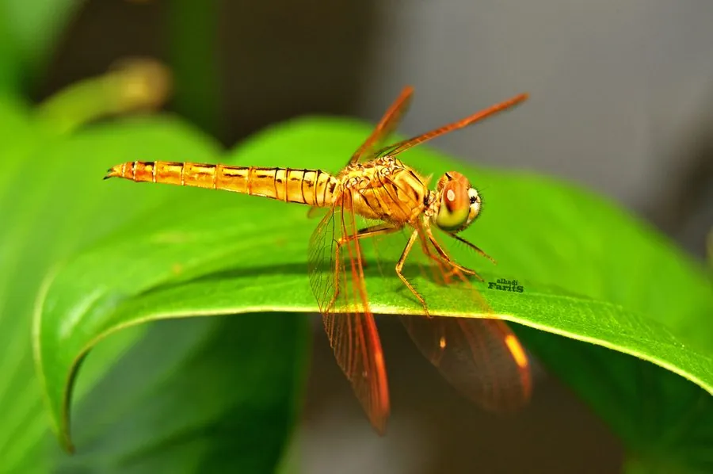

昆虫 · 动物界
黄翅蜻 Brachythemis contaminata

翅膀基部呈橙黄色的蜻科昆虫，雄虫体色橙红，常在水池、沟渠边停歇，是城市和乡村水体边最常见的小型蜻蜓之一。
- 分类
- 门节肢动物门纲昆虫纲目蜻蜓目科蜻科属黄翅蜻属
- 栖息环境
- 池塘、沟渠、稻田和缓流河边，成虫常在水边草叶和石头上停歇
- 地理分布
- 南亚、东南亚和东亚，中国南方常见
- 保护级别
- 暂无评估
物种志
黄翅蜻成虫体长 30–35 mm，翅展 50–60 mm。雄虫体色橙黄至橙红，翅膀基部有橙黄色斑，翅脉带红色；雌虫体色黄褐，斑纹较淡。它的翅斑是辨认它的重要特征。
黄翅蜻分布于南亚、东南亚和东亚，中国南方常见，栖息于池塘、沟渠、稻田和缓流河边。雄虫常停在水边的草叶和石头上守卫领地，雌虫在水面植物上产卵，成虫捕食蚊、蝇等小飞虫。稚虫水生，捕食水中的小型动物，是池塘生态系统中常见的小型捕食者。蜻蜓的“点水”动作，其实就是雌虫贴近水面产卵；成虫在水边十分活跃，常与同类争夺停歇点。目前它没有IUCN 的正式评估，中国未将其列入国家重点保护野生动物名录。
形态与习性
- 食性成虫捕食蚊、蝇等飞虫，稚虫捕食水中小动物
- 体长30–35 mm，翅展 50–60 mm
- 翅斑翅膀基部有橙黄色斑，是重要的识别特征
- 雌雄差异雄虫橙黄至橙红色，雌虫黄褐色
- 栖息地池塘、沟渠、稻田和缓流河边
- 稚虫水生，是池塘中的小型捕食者
趣味知识
- 黄翅蜻的翅膀基部有一抹橙黄色，雄虫的身体也呈橙红色。
- 它常停在水边的草叶和石头上，是池塘边最常见的小蜻蜓之一。
- 蜻蜓的“点水”其实是雌虫在水面产卵的动作。